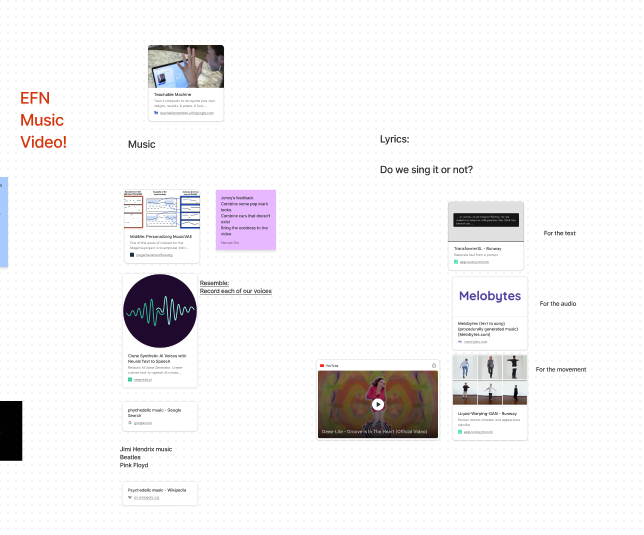
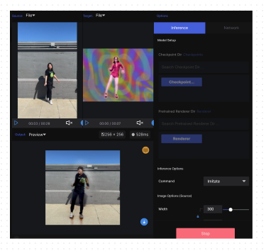
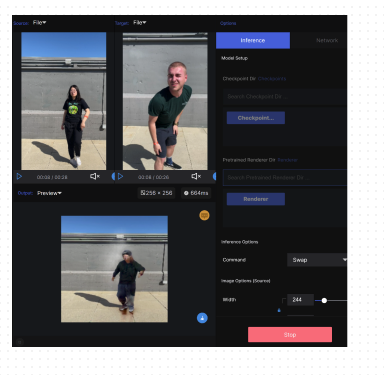

The Brief:Working in teams of 3-4, create a digital twin model(s) using one another as your datasets and various machine learning software examples. Using yourselves as a medium, how can you use machine learning to extend one another’s attributes, mix, mash, and collaborate and formulate new in-between aesthetics from these various processes?
Fanxuan, Noah and I worked together to create a "pop star" based on blended datasets of us performing as Lady Miss Kier from the opening to the Deee-Lite video, Groove is in the Heart.
Sketching out the idea in Figma
Our team used RunwayML's Liquid Warping GAN. This machine learning program takes the movement of one reference and applies it to the second reference.
Data Sets
Tests


Datasets:Because our datasets are limited to videos of ourselves—as shown above—we decided they were not of value to the public.